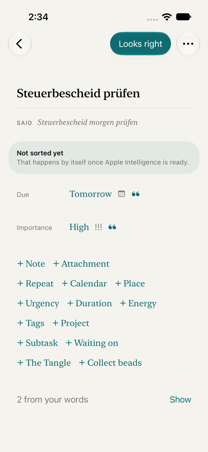
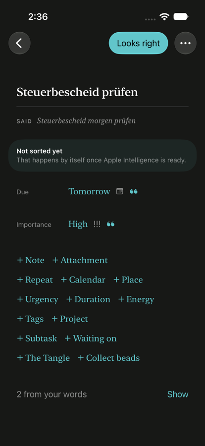

<title>Claudes Spur im Detail</title>
<meta name="claude:viewport-fit-sides" content="cover">
<link rel="stylesheet" href="https://fonts.googleapis.com/css2?family=Source+Serif+4:ital,opsz,wght@0,8..60,400;0,8..60,600;1,8..60,400&family=Inter+Tight:wght@400;500;600&display=swap">
<style>
/* Layout: Vergleichsseite, je Variante eine Zeile mit Hell- und Dunkel-Telefon nebeneinander */
:root {
  --bg: #F4F3EE; --fg: #1F2221; --muted: #6B706D; --line: #DAD8D0; --accent: #136F74; --chip: #E3E7E3;
  --serif: "Source Serif 4", "New York", Georgia, serif;
  --sans: "Inter Tight", -apple-system, "Helvetica Neue", sans-serif;
}
@media (prefers-color-scheme: dark) { :root:not([data-theme="light"]) {
  --bg: #171816; --fg: #ECEDE8; --muted: #9EA39F; --line: #333532; --accent: #60C2C7; --chip: #262A28; color-scheme: dark } }
:root[data-theme="dark"] { --bg: #171816; --fg: #ECEDE8; --muted: #9EA39F; --line: #333532; --accent: #60C2C7; --chip: #262A28; color-scheme: dark }
body { background: var(--bg); color: var(--fg); font-family: var(--sans); font-size: 15px; line-height: 1.5;
  padding-left: max(16px, env(safe-area-inset-left, 0px)); padding-right: max(16px, env(safe-area-inset-right, 0px)); padding-block: 32px 64px; }
main { max-width: 1080px; margin: 0 auto; display: grid; gap: 56px; }
h1 { font-family: var(--serif); font-weight: 600; font-size: 2.1rem; line-height: 1.15; margin: 0; text-wrap: balance; }
h2 { font-family: var(--serif); font-weight: 600; font-size: 1.45rem; margin: 0; text-wrap: balance; }
.lede { max-width: 65ch; color: var(--muted); margin: 0; }
.intro { display: grid; gap: 12px; }
section { display: grid; gap: 16px; }
.tag { font-size: .72rem; letter-spacing: .12em; text-transform: uppercase; color: var(--accent); font-weight: 600; }
.text { max-width: 65ch; margin: 0; }
.phones { display: flex; flex-wrap: wrap; gap: 24px; align-items: flex-start; }
figure { margin: 0; display: grid; gap: 8px; }
figcaption { font-size: .78rem; color: var(--muted); letter-spacing: .04em; }
.shot { width: 300px; max-width: 100%; border-radius: 28px; border: 1px solid var(--line); display: block; }

/* Nachgebaute App-Ansicht, feste App-Farben je Erscheinungsbild */
.app { width: 300px; max-width: 100%; border-radius: 28px; border: 1px solid var(--line); padding: 22px 20px 26px;
  display: grid; gap: 14px; font-family: -apple-system, var(--sans); font-size: 13px; }
.app.l { --a-bg: #F4F3EE; --a-fg: #161816; --a-mu: #74786F; --a-ac: #136F74; --a-hl: #E4E7E3; --a-ln: #D9D8D1; }
.app.d { --a-bg: #171816; --a-fg: #EEEFEA; --a-mu: #959A95; --a-ac: #60C2C7; --a-hl: #262A28; --a-ln: #34362F; }
.app { background: var(--a-bg); color: var(--a-fg); }
.app .t { font-family: var(--serif); font-weight: 600; font-size: 21px; line-height: 1.2; padding-bottom: 10px; border-bottom: 1px solid var(--a-ln); }
.app .reg { display: grid; grid-template-columns: 64px 1fr; gap: 6px; align-items: baseline; }
.app .k { font-size: 10px; letter-spacing: .12em; color: var(--a-mu); font-weight: 600; text-transform: uppercase; }
.app .said { font-family: var(--serif); font-style: italic; color: var(--a-mu); font-size: 15px; }
.app .via { font-size: 13px; color: var(--a-fg); }
.app .via span { color: var(--a-mu); }
.app .via a { color: var(--a-ac); text-decoration: none; }
.app .row { display: grid; grid-template-columns: 74px 1fr; font-size: 12px; color: var(--a-mu); }
.app .row b { font-family: var(--serif); font-weight: 400; font-size: 17px; color: var(--a-ac); }
.app .words { font-family: var(--serif); color: var(--a-ac); font-size: 15px; line-height: 1.7; }
.app .foot { display: flex; justify-content: space-between; gap: 8px; color: var(--a-mu); font-size: 14px; padding-top: 6px; }
.app .foot a { color: var(--a-ac); text-decoration: none; }
.app .sheet-h { display: flex; justify-content: space-between; font-size: 13px; color: var(--a-ac); }
.app .sheet-h b { color: var(--a-fg); font-weight: 600; }
.app .rev { display: grid; gap: 2px; padding: 9px 0; border-bottom: 1px solid var(--a-ln); }
.app .rev .h { display: flex; justify-content: space-between; font-weight: 600; font-size: 14px; }
.app .rev .h span { font-weight: 400; font-size: 11px; color: var(--a-mu); }
.app .rev .h span.ai { color: var(--a-ac); }
.app .rev .v { font-size: 13px; }
.app .rev .w { font-size: 10.5px; color: var(--a-mu); display: flex; justify-content: space-between; }
.app .rev .w a { color: var(--a-ac); text-decoration: none; font-size: 11.5px; }
.app .new { background: var(--a-hl); border-radius: 6px; padding: 0 4px; margin: 0 -4px; }

.verdict { border-left: 3px solid var(--accent); padding: 4px 0 4px 14px; max-width: 65ch; margin: 0; }
ul.pts { margin: 0; padding-left: 1.1em; max-width: 65ch; display: grid; gap: 4px; }
</style>

<main>
  <div class="intro">
    <span class="tag">#622 · Entwurf vor der Spec</span>
    <h1>Was Claude an einer Aufgabe geändert hat</h1>
    <p class="lede">Claude kann Aufgaben erledigen, nach „Als Nächstes“ legen, parken, verschieben und Unterpunkte anhängen. Heute bleibt davon in der App fast keine Spur: nur das Verschieben wird vermerkt, und selbst das ist oft nicht zu finden. Künftig steht jede dieser Änderungen in der Liste „Änderungen“ der Aufgabe, mit „Claude“ als Urheber. Die Frage hier ist nur, wo man diese Liste öffnet.</p>
  </div>

  <section>
    <span class="tag">Heute</span>
    <h2>Der Zugang hängt an der App-Auswertung</h2>
    <p class="text">Die Zeile ganz unten („2 aus deinen Worten · Zeigen“) erscheint nur, wenn die App selbst Felder gesetzt hat. Hat nur Claude etwas geändert, fehlt sie, und die Liste der Änderungen ist nicht zu erreichen. In der Liste selbst stünde Claude außerdem als „Du“.</p>
    <div class="phones">
      <figure><figcaption>Heute · hell (Bild aus der App)</figcaption></figure>
      <figure><figcaption>Heute · dunkel</figcaption></figure>
    </div>
  </section>

  <section>
    <span class="tag">Entwurf A · Empfehlung</span>
    <h2>Die Zeile unten zeigt auch Claude</h2>
    <p class="text">Die bekannte Zeile am Ende des Details erscheint auch dann, wenn nur Claude etwas geändert hat, und nennt das zuletzt: „Zuletzt von Claude · heute 14:02“. Dahinter liegt dieselbe Liste wie heute. Dort steht „Claude“ als Urheber, grau wie „Du“, weil es deine Änderung über Claude ist. Rückgängig-Knöpfe gibt es dafür nicht, wie bei deinen eigenen Änderungen.</p>
    <div class="phones">
      <div class="app l" aria-label="Entwurf A, Detail, hell">
        <div class="t">Winterreifen wechseln</div>
        <div class="reg"><span class="k">Gesagt</span><span class="said">Reifen wechseln vor Freitag</span></div>
        <div class="row"><span>Fällig</span><b>Mo, 23. Nov.</b></div>
        <div class="words">+ Notiz &nbsp; + Anhang &nbsp; + Wiederholen<br>+ Dauer &nbsp; + Tags &nbsp; + Projekt</div>
        <div class="foot"><span>Zuletzt von Claude · heute 14:02</span><a href="#a">Zeigen</a></div>
      </div>
      <div class="app d" aria-label="Entwurf A, Liste der Änderungen, dunkel">
        <div class="sheet-h"><span>Alles zurücksetzen</span><b>Änderungen</b><span>Fertig</span></div>
        <div class="rev"><div class="h">Unterpunkt<span>Claude</span></div><div class="v">Leer → Reifen beim Händler bestellen</div><div class="w">15. Nov., 14:02</div></div>
        <div class="rev"><div class="h">Als Nächstes<span>Claude</span></div><div class="v">Nein → Ja</div><div class="w">15. Nov., 14:01</div></div>
        <div class="rev"><div class="h">Fällig<span>Claude</span></div><div class="v">20. Nov. → 23. Nov.</div><div class="w">15. Nov., 14:01</div></div>
        <div class="rev"><div class="h">Fällig<span class="ai">Aus deinen Worten</span></div><div class="v">Leer → 20. Nov.</div><div class="w">12. Nov., 08:10<a href="#a">Zurücksetzen</a></div></div>
      </div>
    </div>
    <p class="text" style="color:var(--muted)">Links das Detail hell, rechts die Liste dunkel. Erledigen und Parken erscheinen als „Status: Offen → Erledigt“ bzw. „Offen → Geparkt“.</p>
  </section>

  <section>
    <span class="tag">Alternative B</span>
    <h2>Eine eigene Zeile oben unter „Gesagt“</h2>
    <p class="text">Unter dem gesprochenen Satz steht eine zweite Zeile im selben Stil: „Claude · nach Als Nächstes gelegt, heute 14:01“. Ein Tipp öffnet dieselbe Liste. Das fällt sofort auf, kostet aber oben Platz bei jeder Aufgabe, die Claude je angefasst hat, und steht neben deinem Satz gleichrangig da.</p>
    <div class="phones">
      <div class="app l" aria-label="Alternative B, hell">
        <div class="t">Winterreifen wechseln</div>
        <div class="reg"><span class="k">Gesagt</span><span class="said">Reifen wechseln vor Freitag</span></div>
        <div class="reg"><span class="k">Claude</span><span class="via">nach Als Nächstes gelegt <span>· heute 14:01</span> <a href="#b">›</a></span></div>
        <div class="row"><span>Fällig</span><b>Mo, 23. Nov.</b></div>
        <div class="words">+ Notiz &nbsp; + Anhang &nbsp; + Wiederholen<br>+ Dauer &nbsp; + Tags &nbsp; + Projekt</div>
      </div>
      <div class="app d" aria-label="Alternative B, dunkel">
        <div class="t">Winterreifen wechseln</div>
        <div class="reg"><span class="k">Gesagt</span><span class="said">Reifen wechseln vor Freitag</span></div>
        <div class="reg"><span class="k">Claude</span><span class="via">nach Als Nächstes gelegt <span>· heute 14:01</span> <a href="#b">›</a></span></div>
        <div class="row"><span>Fällig</span><b>Mo, 23. Nov.</b></div>
        <div class="words">+ Notiz &nbsp; + Anhang &nbsp; + Wiederholen<br>+ Dauer &nbsp; + Tags &nbsp; + Projekt</div>
      </div>
    </div>
  </section>

  <section>
    <span class="tag">Für beide gleich</span>
    <ul class="pts">
      <li>Was Claude anlegt, ist eine neue Aufgabe und braucht keinen Eintrag; Unterpunkte von Claude zählen als von Claude erfasst.</li>
      <li>Rückt eine wiederkehrende Aufgabe beim Erledigen weiter, zählt das nicht als „verschoben“.</li>
      <li>Die Listen, die Zahl auf dem Symbol und alles andere bleiben unverändert.</li>
    </ul>
    <p class="verdict">Empfehlung: Entwurf A. Er nutzt den Ort, den es für Änderungen schon gibt, und macht die Aufgabe nicht voller.</p>
  </section>
</main>
